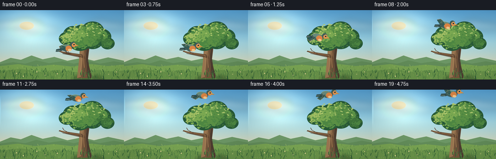
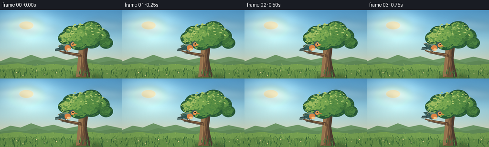
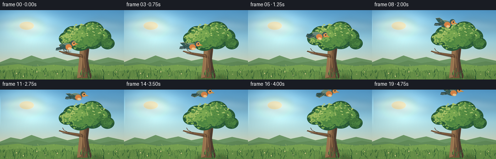
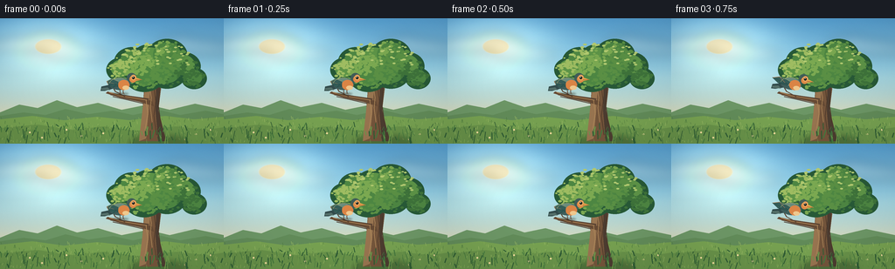
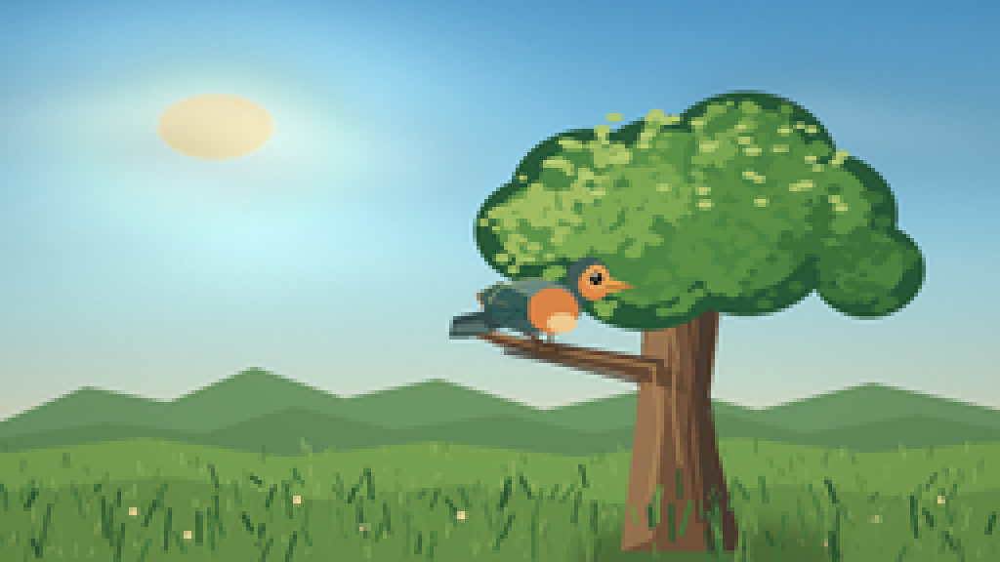
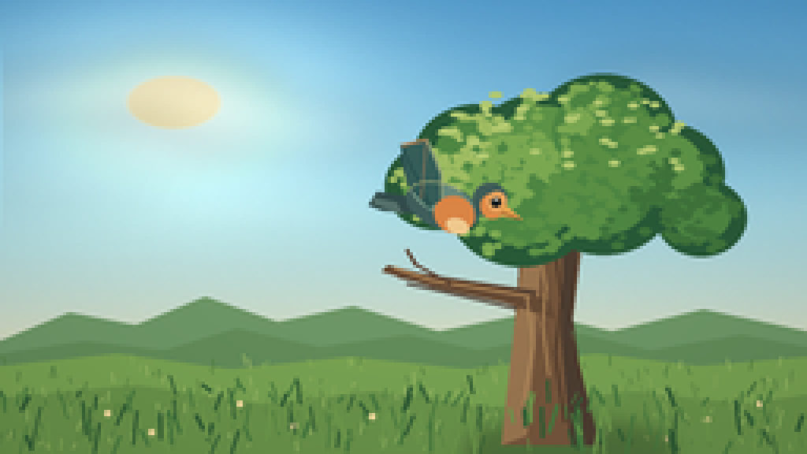
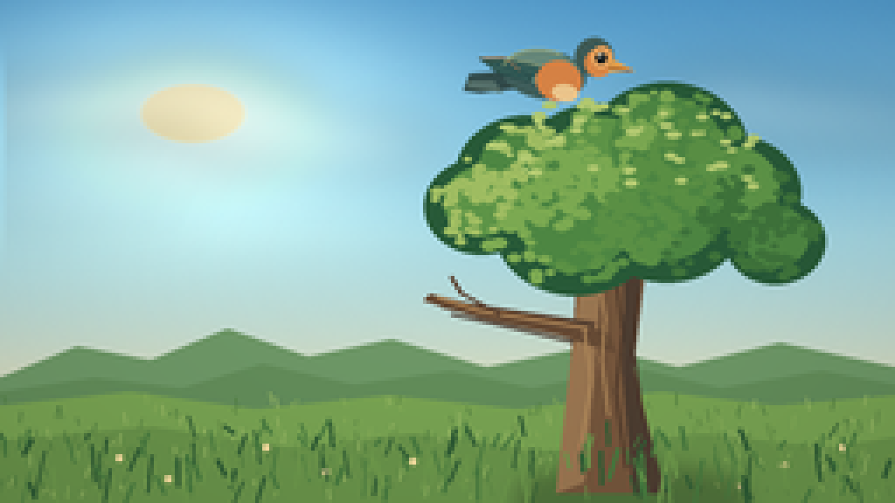
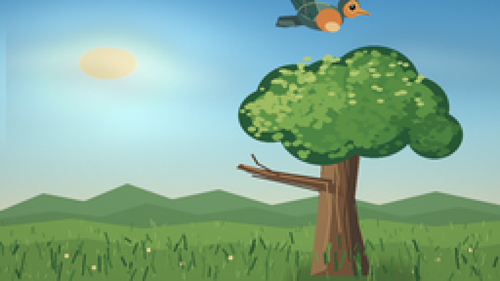
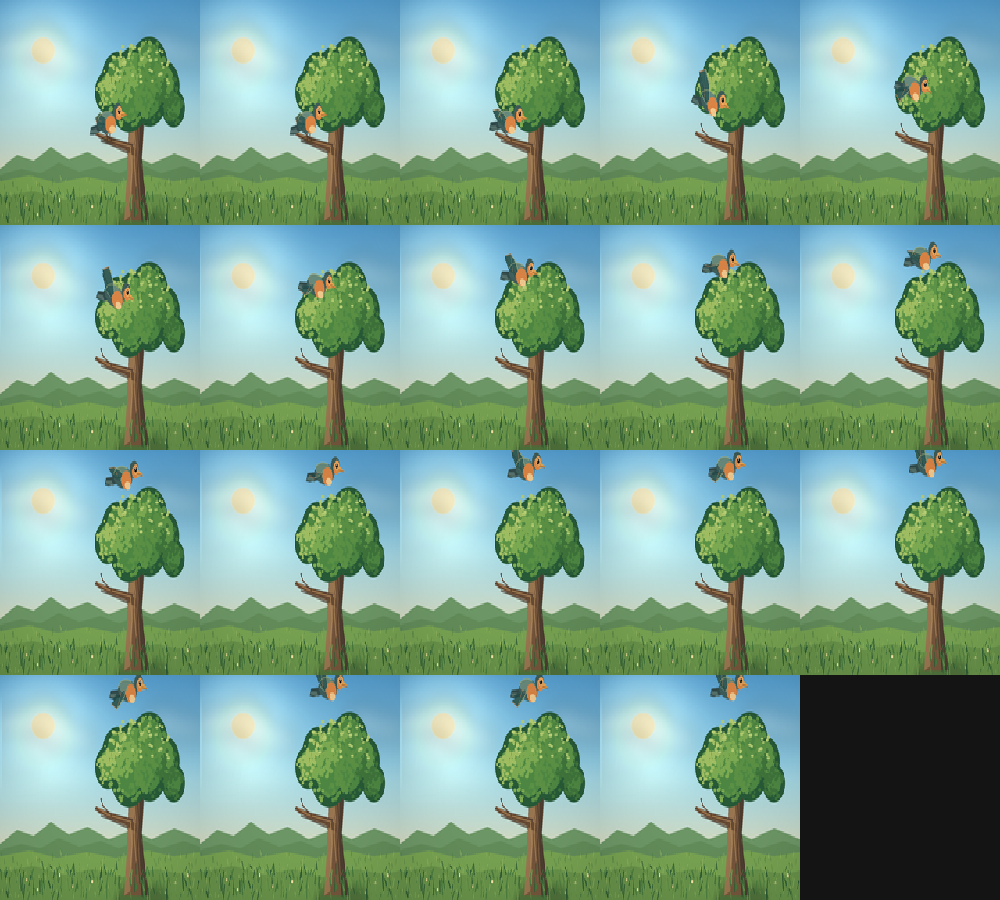
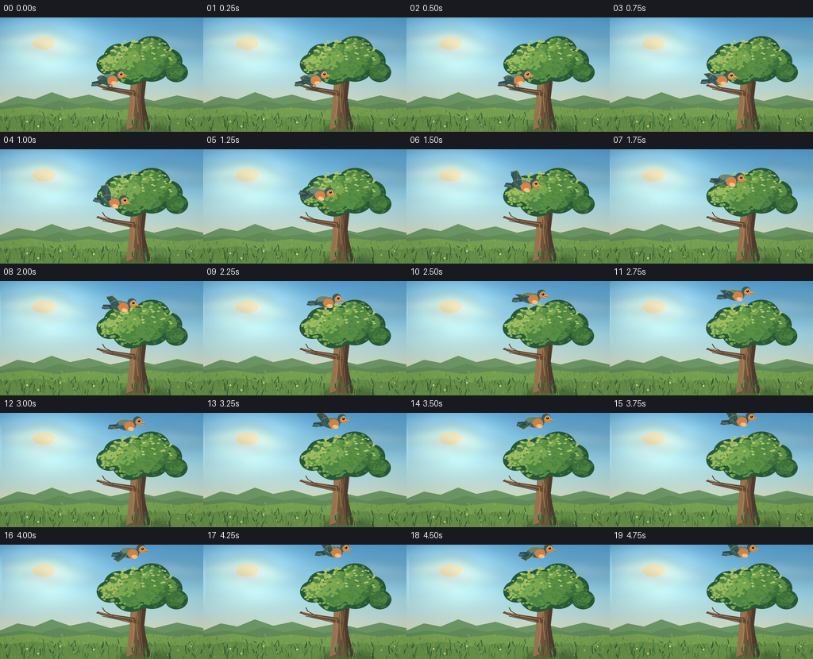

CODING AGENTS AS PIXEL WORLD MODELS
traex/DeepSeek-V4.1-Flash · dynamic_spatial_relationship_0050
点击播放 · 原生 RGB 像素
逐轮保存的候选
回放视频、检查图与代码变化。
每份候选均可单独播放。实际图片检查记录在下方工具轨迹中。
候选 01播放与检查图
点击播放 · 原生 RGB 像素


展开代码变化
--- 上一保存版本
+++ 本次保存版本
@@ -0,0 +1,468 @@
+"""Generate a five-second, hand-rendered bird flight animation."""
+
+from pathlib import Path
+import math
+import random
+
+import numpy as np
+from PIL import Image, ImageDraw, ImageFilter
+
+import artifact_io
+
+
+W, H, FPS, FRAMES = 256, 144, 4.0, 20
+S = 4 # Supersampling factor for clean edges.
+ROOT = Path(__file__).resolve().parent
+
+
+def rgb(hex_value):
+ hex_value = hex_value.lstrip("#")
+ return tuple(int(hex_value[i:i + 2], 16) for i in (0, 2, 4))
+
+
+def scaled_points(points):
+ return [(round(x * S), round(y * S)) for x, y in points]
+
+
+def scaled_box(box):
+ x0, y0, x1, y1 = box
+ return (round(x0 * S), round(y0 * S), round(x1 * S), round(y1 * S))
+
+
+def smoothstep(value):
+ return value * value * (3.0 - 2.0 * value)
+
+
+def ease_out_cubic(value):
+ return 1.0 - (1.0 - value) ** 3
+
+
+def build_sky():
+ yy, xx = np.mgrid[0:H * S, 0:W * S]
+ x = xx / (W * S)
+ y = yy / (H * S)
+
+ top = np.array(rgb("#559fd1"), dtype=np.float32)
+ middle = np.array(rgb("#9dd5e6"), dtype=np.float32)
+ horizon = np.array(rgb("#f7dfaa"), dtype=np.float32)
+ blend = np.clip(y / 0.73, 0.0, 1.0)
+ lower = np.clip(blend * 1.55, 0.0, 1.0)
+ sky = top[None, None, :] * (1.0 - lower[..., None])
+ sky += middle[None, None, :] * lower[..., None]
+ warm = np.clip((y - 0.34) / 0.39, 0.0, 1.0) ** 1.8
+ sky = sky * (1.0 - warm[..., None] * 0.58) + horizon * (warm[..., None] * 0.58)
+
+ # Soft morning sun and a broad atmospheric glow.
+ distance = np.sqrt((x - 0.215) ** 2 + (y - 0.225) ** 2)
+ glow = np.exp(-(distance / 0.24) ** 2) * 0.40
+ sky += np.array([255, 224, 154], dtype=np.float32)[None, None, :] * glow[..., None]
+ disk = np.clip((0.064 - distance) / 0.010, 0.0, 1.0)
+ sky = sky * (1.0 - disk[..., None] * 0.92)
+ sky += np.array([255, 239, 184], dtype=np.float32)[None, None, :] * disk[..., None] * 0.92
+
+ grain = np.random.default_rng(9).normal(0, 1.15, (H * S, W * S, 1)).astype(np.float32)
+ sky += grain
+ return np.clip(sky, 0, 255).astype(np.uint8)
+
+
+def make_cloud_layer():
+ layer = Image.new("RGBA", (W * S, H * S), (0, 0, 0, 0))
+ draw = ImageDraw.Draw(layer)
+ clouds = [
+ (28, 31, 38, 9, 78),
+ (53, 27, 30, 10, 92),
+ (89, 41, 32, 8, 60),
+ (207, 28, 26, 7, 54),
+ (232, 34, 31, 8, 52),
+ (13, 58, 34, 6, 42),
+ ]
+ for cx, cy, rx, ry, alpha in clouds:
+ for dx, dy, sx, sy in [
+ (-0.55, 0.12, 0.60, 0.70),
+ (0.00, -0.12, 0.78, 1.00),
+ (0.62, 0.13, 0.54, 0.64),
+ ]:
+ box = scaled_box((
+ cx + dx * rx - sx * rx,
+ cy + dy * ry - sy * ry,
+ cx + dx * rx + sx * rx,
+ cy + dy * ry + sy * ry,
+ ))
+ draw.ellipse(box, fill=(255, 249, 230, alpha))
+ return layer.filter(ImageFilter.GaussianBlur(7 * S))
+
+
+def build_leaf_positions():
+ rng = random.Random(41)
+ clusters = [
+ (172, 49, 22),
+ (151, 50, 19),
+ (191, 43, 22),
+ (210, 55, 18),
+ (191, 62, 21),
+ (165, 65, 22),
+ (138, 59, 15),
+ (222, 69, 13),
+ ]
+ leaves = []
+ while len(leaves) < 520:
+ cx, cy, radius = rng.choices(clusters, weights=[c[2] for c in clusters])[0]
+ angle = rng.random() * math.tau
+ radial = math.sqrt(rng.random()) * radius * 0.96
+ x = cx + math.cos(angle) * radial
+ y = cy + math.sin(angle) * radial * 0.82
+ size = rng.uniform(1.25, 2.85)
+ phase = rng.random() * math.tau
+ leaves.append((x, y, size, phase))
+ return leaves
+
+
+LEAVES = build_leaf_positions()
+GRASS_RNG = random.Random(82)
+GRASS = []
+for _ in range(170):
+ x = GRASS_RNG.uniform(0, W)
+ y = GRASS_RNG.uniform(124, 146)
+ height = GRASS_RNG.uniform(3.0, 10.5) * (0.55 + (y - 124) / 24)
+ lean = GRASS_RNG.uniform(-3.0, 3.0)
+ width = GRASS_RNG.uniform(0.55, 1.25)
+ shade = GRASS_RNG.choice([0, 1, 2])
+ GRASS.append((x, y, height, lean, width, shade))
+
+
+def draw_trunk(draw):
+ # Ground shadow.
+ shadow = Image.new("RGBA", (W * S, H * S), (0, 0, 0, 0))
+ sdraw = ImageDraw.Draw(shadow)
+ sdraw.ellipse(scaled_box((148, 134, 213, 150)), fill=(39, 61, 35, 100))
+ shadow = shadow.filter(ImageFilter.GaussianBlur(3 * S))
+ draw._image.alpha_composite(shadow)
+
+ trunk = [
+ (168, 61), (181, 60), (184, 81), (181, 105), (190, 141),
+ (159, 141), (163, 105), (165, 80),
+ ]
+ draw.polygon(scaled_points(trunk), fill=rgb("#75563c"))
+
+ # Sunlit left edge and deep right-side shadow.
+ draw.polygon(scaled_points([
+ (168, 62), (173, 62), (170, 104), (167, 138), (159, 141), (163, 105),
+ ]), fill=rgb("#9a7651"))
+ draw.polygon(scaled_points([
+ (179, 62), (182, 63), (183, 82), (181, 106), (190, 141), (181, 141),
+ (178, 106),
+ ]), fill=rgb("#4d3d31"))
+
+ # Branches behind the canopy.
+ branches = [
+ [(172, 78), (157, 64), (146, 57), (148, 54), (160, 59), (176, 73)],
+ [(176, 74), (188, 58), (199, 48), (202, 50), (192, 61), (181, 78)],
+ [(176, 67), (171, 48), (168, 37), (171, 36), (177, 49), (181, 67)],
+ [(170, 92), (149, 89), (130, 86), (126, 88), (143, 92), (169, 98)],
+ ]
+ for branch in branches:
+ draw.polygon(scaled_points(branch), fill=rgb("#5c4534"))
+
+ # Perch branch, kept crisp below the lower canopy.
+ draw.polygon(scaled_points([
+ (174, 95), (158, 91), (139, 88), (123, 84), (121, 86),
+ (137, 91), (160, 96), (176, 101),
+ ]), fill=rgb("#674b35"))
+ draw.line(scaled_points([(168, 94), (137, 89), (125, 85)]),
+ fill=rgb("#ad8456"), width=max(1, S))
+ draw.line(scaled_points([(164, 98), (143, 93), (129, 90)]),
+ fill=rgb("#47362b"), width=max(1, S))
+ draw.line(scaled_points([(143, 90), (132, 84), (129, 79)]),
+ fill=rgb("#5b4332"), width=max(1, S))
+
+ # Bark texture.
+ bark_lines = [
+ [(172, 67), (171, 78), (173, 91), (172, 103), (174, 119)],
+ [(177, 64), (176, 79), (178, 95), (176, 112), (179, 134)],
+ [(167, 94), (169, 109), (166, 128)],
+ [(182, 84), (181, 99), (184, 121)],
+ ]
+ for index, line in enumerate(bark_lines):
+ draw.line(scaled_points(line), fill=rgb("#4d382a" if index % 2 else "#b18a5b"),
+ width=max(1, round(0.8 * S)))
+
+
+def draw_canopy(frame, draw):
+ sway = 0.42 * math.sin(frame * 0.42)
+ clusters = [
+ (172, 49, 22), (151, 50, 19), (191, 43, 22), (210, 55, 18),
+ (191, 62, 21), (165, 65, 22), (138, 59, 15), (222, 69, 13),
+ ]
+
+ # Dense shadow mass under the leaves.
+ for cx, cy, radius in clusters:
+ box = scaled_box((
+ cx + sway - radius - 1.4,
+ cy - radius * 0.82 - 1.5,
+ cx + sway + radius + 1.4,
+ cy + radius * 0.82 + 1.5,
+ ))
+ draw.ellipse(box, fill=rgb("#285a38"))
+
+ # Large tonal masses give the canopy a readable silhouette.
+ for index, (cx, cy, radius) in enumerate(clusters):
+ offset = math.sin(index * 1.7 + frame * 0.21) * 0.28
+ box = scaled_box((
+ cx + sway + offset - radius * 0.72,
+ cy - radius * 0.60 - 2.2,
+ cx + sway + offset + radius * 0.72,
+ cy + radius * 0.63 - 1.0,
+ ))
+ color = rgb("#4e8743") if index % 3 else rgb("#5e9548")
+ draw.ellipse(box, fill=color)
+
+ # Small leaf marks carry the texture without making the silhouette noisy.
+ for x, y, size, phase in LEAVES:
+ local_sway = sway + 0.55 * math.sin(frame * 0.33 + phase)
+ light = ((172 - x) * 0.8 + (62 - y) * 0.6) / 30.0
+ if light > 0.75:
+ color = rgb("#9fbd62")
+ elif light > 0.05:
+ color = rgb("#7caa52")
+ elif light > -0.7:
+ color = rgb("#5b9145")
+ else:
+ color = rgb("#3f743b")
+ draw.ellipse(scaled_box((
+ x + local_sway - size * 0.85,
+ y - size * 0.55,
+ x + local_sway + size * 0.85,
+ y + size * 0.55,
+ )), fill=color)
+
+ # A few bright crown leaves catch the morning light.
+ rng = random.Random(123)
+ for _ in range(58):
+ x = rng.uniform(139, 216)
+ y = rng.uniform(28, 54)
+ if ((x - 178) / 43) ** 2 + ((y - 48) / 24) ** 2 > 1:
+ continue
+ size = rng.uniform(1.0, 2.2)
+ draw.ellipse(scaled_box((x - size, y - size * 0.5, x + size, y + size * 0.5)),
+ fill=rgb("#b4cc72"))
+
+
+def draw_landscape(frame, image, draw):
+ # Distant hills.
+ draw.polygon(scaled_points([
+ (0, 108), (22, 99), (43, 103), (65, 94), (88, 102), (112, 97),
+ (139, 105), (169, 99), (194, 105), (223, 98), (256, 105),
+ (256, 144), (0, 144),
+ ]), fill=rgb("#6e9867"))
+ draw.polygon(scaled_points([
+ (0, 112), (27, 108), (52, 111), (75, 104), (101, 110), (129, 106),
+ (152, 111), (181, 105), (206, 111), (235, 106), (256, 110),
+ (256, 144), (0, 144),
+ ]), fill=rgb("#638d5a"))
+
+ # Meadow bands and a warm sunlit path.
+ draw.polygon(scaled_points([
+ (0, 116), (37, 112), (73, 117), (111, 113), (148, 117), (189, 112),
+ (222, 116), (256, 113), (256, 144), (0, 144),
+ ]), fill=rgb("#78a352"))
+ draw.polygon(scaled_points([
+ (0, 126), (43, 122), (83, 128), (118, 124), (157, 129), (201, 124),
+ (236, 128), (256, 125), (256, 144), (0, 144),
+ ]), fill=rgb("#69934a"))
+
+ rng = random.Random(17)
+ for _ in range(240):
+ x = rng.uniform(0, W)
+ y = rng.uniform(115, 143)
+ length = rng.uniform(1.0, 3.8)
+ color = rng.choice(["#87ae58", "#5c8744", "#9bbb66", "#4f7d3f"])
+ draw.line(scaled_points([(x, y), (x + rng.uniform(-1.0, 1.0), y - length)]),
+ fill=rgb(color), width=max(1, round(0.45 * S)))
+
+ # Tiny wildflowers provide scale without distracting from the bird.
+ flower_positions = [(34, 131), (48, 137), (76, 128), (93, 135), (118, 132),
+ (224, 133), (241, 128), (212, 139)]
+ for x, y in flower_positions:
+ draw.ellipse(scaled_box((x - 0.9, y - 0.9, x + 0.9, y + 0.9)),
+ fill=rgb("#f6dfa0"))
+
+
+def draw_foreground(draw):
+ for x, y, height, lean, width, shade in GRASS:
+ if shade == 0:
+ color = rgb("#315e35")
+ elif shade == 1:
+ color = rgb("#477a3f")
+ else:
+ color = rgb("#6d984b")
+ tip_x = x + lean
+ draw.line(scaled_points([(x, y), (tip_x, y - height)]),
+ fill=color, width=max(1, round(width * S)))
+
+
+def wing_polygon(flap, near=True):
+ lift = max(-1.0, min(1.0, flap))
+ if near:
+ return [
+ (-2, -2), (-5, -2 - 8.0 * lift), (-13, -2 - 17.0 * lift),
+ (-20, -1 - 13.0 * lift), (-14, 2 - 5.0 * lift), (-5, 3 - 1.0 * lift),
+ ]
+ return [
+ (-1, -1), (-4, -1 - 7.0 * lift), (-11, -1 - 14.5 * lift),
+ (-18, 0 - 11.0 * lift), (-12, 2 - 4.0 * lift), (-4, 3),
+ ]
+
+
+def draw_bird(center, angle, flap, perched=False):
+ canvas = 86
+ cx = cy = canvas / 2
+ sprite = Image.new("RGBA", (canvas * S, canvas * S), (0, 0, 0, 0))
+ d = ImageDraw.Draw(sprite)
+
+ def point(p):
+ return (round((cx + p[0]) * S), round((cy + p[1]) * S))
+
+ def box(b):
+ return (
+ round((cx + b[0]) * S), round((cy + b[1]) * S),
+ round((cx + b[2]) * S), round((cy + b[3]) * S),
+ )
+
+ def poly(points, fill, outline=None, width=1):
+ d.polygon([point(p) for p in points], fill=fill,
+ outline=outline, width=max(1, round(width * S)))
+
+ # Perched feet sit behind the body and on top of the branch.
+ if perched:
+ for foot_x in (-1.0, 2.6):
+ d.line([point((foot_x, 5.5)), point((foot_x + 0.3, 10.8))],
+ fill=rgb("#5b3b29"), width=max(1, round(0.8 * S)))
+ d.line([point((foot_x + 0.3, 10.8)), point((foot_x - 1.0, 11.5))],
+ fill=rgb("#5b3b29"), width=max(1, round(0.55 * S)))
+ d.line([point((foot_x + 0.3, 10.8)), point((foot_x + 1.7, 11.4))],
+ fill=rgb("#5b3b29"), width=max(1, round(0.55 * S)))
+
+ # Tail.
+ poly([(-8, 0), (-22, 3), (-23, 8), (-18, 8), (-7, 5)], rgb("#334c4c"))
+ poly([(-15, 4), (-22, 5), (-22, 7), (-12, 7)], rgb("#55706a"))
+
+ # Far wing.
+ if perched:
+ far = [(-3, -2), (-11, -5), (-16, -2), (-13, 2), (-5, 3)]
+ else:
+ far = wing_polygon(flap * 0.88, near=False)
+ far = [(x - 1.4, y - 1.1) for x, y in far]
+ poly(far, rgb("#294d4d"))
+ d.line([point(far[1]), point(far[4])], fill=rgb("#3f6963"),
+ width=max(1, round(0.55 * S)))
+
+ # Main body and warm breast.
+ d.ellipse(box((-13, -7, 11, 7)), fill=rgb("#405f5c"))
+ d.ellipse(box((-12, -6.4, 9, 2.8)), fill=rgb("#698b7d"))
+ d.ellipse(box((-3, -4.5, 10, 7)), fill=rgb("#db8546"))
+ d.ellipse(box((2, 2, 9.4, 6.7)), fill=rgb("#f0c98e"))
+
+ # Head, cheek, eye, and beak.
+ d.ellipse(box((7, -12.5, 18, -1.5)), fill=rgb("#405d58"))
+ d.ellipse(box((10, -9.5, 18, -1.5)), fill=rgb("#df8a48"))
+ d.ellipse(box((11.5, -10.6, 17.7, -4.0)), fill=rgb("#e7a35e"))
+ d.ellipse(box((13.0, -8.6, 16.0, -5.6)), fill=rgb("#161d1e"))
+ d.ellipse(box((13.7, -8.2, 14.6, -7.3)), fill=rgb("#fff5d8"))
+ poly([(17, -7.6), (24.5, -4.8), (17, -3.2)], rgb("#e6a24e"))
+ d.line([point((17, -4.7)), point((23.4, -4.8))],
+ fill=rgb("#8e552d"), width=max(1, round(0.42 * S)))
+
+ # Near wing, with visible feather separations.
+ if perched:
+ near = [(-3, -3), (-10, -6), (-16, -3), (-14, 1), (-9, 4), (-3, 3)]
+ else:
+ near = wing_polygon(flap, near=True)
+ poly(near, rgb("#365e59"), outline=rgb("#203f40"), width=0.35)
+ # A warm leading edge catches the light.
+ d.line([point(near[0]), point(near[1]), point(near[2])],
+ fill=rgb("#8c9d78"), width=max(1, round(0.75 * S)))
+ d.line([point(near[2]), point(near[3])],
+ fill=rgb("#b28157"), width=max(1, round(0.65 * S)))
+ for feather in (3, 4, 5):
+ d.line([point((-5, 1)), point(near[feather])],
+ fill=rgb("#254b49"), width=max(1, round(0.45 * S)))
+ d.line([point((-8, 0)), point(near[2])], fill=rgb("#9a7959"),
+ width=max(1, round(0.45 * S)))
+
+ # A compact warm rim separates the bird from the dark foliage.
+ d.arc(box((-13, -7, 11, 7)), 185, 290, fill=rgb("#a3ad78"),
+ width=max(1, round(0.55 * S)))
+
+ sprite = sprite.rotate(angle, resample=Image.Resampling.BICUBIC, expand=False)
+ return sprite
+
+
+def bird_state(frame):
+ if frame <= 2:
+ return 138.0, 78.2 + 0.35 * math.sin(frame * math.pi), 0.0, 0.0, True
+
+ u = max(0.0, min(1.0, (frame - 3) / 16.0))
+ x = 138.0 + 27.0 * (1.0 - (1.0 - u) ** 2)
+ y = 78.2 - 69.2 * ease_out_cubic(u)
+ if frame == 3:
+ angle = -7.0
+ flap = 0.28
+ else:
+ angle = -8.0 - 13.0 * (1.0 - smoothstep(min(1.0, (frame - 3) / 8.0)))
+ flap = math.cos((frame - 4) * math.pi * 0.92) * 0.94
+ y += -0.65 * flap
+ return x, y, angle, flap, False
+
+
+def render_frame(frame, sky_array, cloud_layer):
+ sky = Image.fromarray(sky_array.copy(), mode="RGB").convert("RGBA")
+ drift = round(frame * 0.16 * S)
+ clouds = Image.new("RGBA", sky.size, (0, 0, 0, 0))
+ clouds.alpha_composite(cloud_layer, dest=(drift, 0))
+ sky.alpha_composite(clouds)
+
+ image = sky
+ draw = ImageDraw.Draw(image)
+ draw_landscape(frame, image, draw)
+ draw_trunk(draw)
+ draw_canopy(frame, draw)
+
+ x, y, angle, flap, perched = bird_state(frame)
+ if perched:
+ # A tiny contact shadow anchors the bird to the branch.
+ contact = Image.new("RGBA", image.size, (0, 0, 0, 0))
+ cdraw = ImageDraw.Draw(contact)
+ cdraw.ellipse(scaled_box((x - 9, 88.0, x + 9, 91.2)), fill=(35, 43, 29, 95))
+ contact = contact.filter(ImageFilter.GaussianBlur(1.0 * S))
+ image.alpha_composite(contact)
+ draw = ImageDraw.Draw(image)
+
+ bird = draw_bird((x, y), angle, flap, perched)
+ left = round(x * S - bird.width / 2)
+ top = round(y * S - bird.height / 2)
+ image.alpha_composite(bird, dest=(left, top))
+
+ draw = ImageDraw.Draw(image)
+ draw_foreground(draw)
+
+ # Gentle optical vignette keeps the center and sky luminous.
+ arr = np.asarray(image.convert("RGB"), dtype=np.float32)
+ yy, xx = np.mgrid[0:H * S, 0:W * S]
+ nx = (xx / (W * S) - 0.5) * 1.5
+ ny = (yy / (H * S) - 0.5) * 1.3
+ vignette = np.clip(1.0 - 0.10 * (nx * nx + ny * ny), 0.86, 1.0)
+ arr *= vignette[..., None]
+ frame_image = Image.fromarray(np.clip(arr, 0, 255).astype(np.uint8), mode="RGB")
+ frame_image = frame_image.resize((W, H), Image.Resampling.LANCZOS)
+ return np.asarray(frame_image, dtype=np.uint8)
+
+
+def main():
+ sky_array = build_sky()
+ cloud_layer = make_cloud_layer()
+ frames = [render_frame(index, sky_array, cloud_layer) for index in range(FRAMES)]
+ artifact_io.save(frames, ROOT)
+
+
+if __name__ == "__main__":
+ main()
候选 02播放与检查图
点击播放 · 原生 RGB 像素


展开代码变化
--- 上一保存版本
+++ 本次保存版本
@@ -304,12 +304,12 @@
lift = max(-1.0, min(1.0, flap))
if near:
return [
- (-2, -2), (-5, -2 - 8.0 * lift), (-13, -2 - 17.0 * lift),
- (-20, -1 - 13.0 * lift), (-14, 2 - 5.0 * lift), (-5, 3 - 1.0 * lift),
+ (-2, -2), (-6, -2 - 7.5 * lift), (-15, -2 - 15.0 * lift),
+ (-23, -1 - 11.5 * lift), (-16, 2 - 4.0 * lift), (-5, 3 - 1.0 * lift),
]
return [
- (-1, -1), (-4, -1 - 7.0 * lift), (-11, -1 - 14.5 * lift),
- (-18, 0 - 11.0 * lift), (-12, 2 - 4.0 * lift), (-4, 3),
+ (-1, -1), (-5, -1 - 6.5 * lift), (-13, -1 - 12.5 * lift),
+ (-20, 0 - 9.5 * lift), (-14, 2 - 3.5 * lift), (-4, 3),
]
@@ -399,11 +399,11 @@
def bird_state(frame):
if frame <= 2:
- return 138.0, 78.2 + 0.35 * math.sin(frame * math.pi), 0.0, 0.0, True
+ return 138.0, 75.3 + 0.32 * math.sin(frame * math.pi), 0.0, 0.0, True
u = max(0.0, min(1.0, (frame - 3) / 16.0))
x = 138.0 + 27.0 * (1.0 - (1.0 - u) ** 2)
- y = 78.2 - 69.2 * ease_out_cubic(u)
+ y = 75.3 - 69.3 * ease_out_cubic(u)
if frame == 3:
angle = -7.0
flap = 0.28
@@ -415,7 +415,7 @@
def render_frame(frame, sky_array, cloud_layer):
- sky = Image.fromarray(sky_array.copy(), mode="RGB").convert("RGBA")
+ sky = Image.fromarray(sky_array.copy()).convert("RGBA")
drift = round(frame * 0.16 * S)
clouds = Image.new("RGBA", sky.size, (0, 0, 0, 0))
clouds.alpha_composite(cloud_layer, dest=(drift, 0))
@@ -432,7 +432,7 @@
# A tiny contact shadow anchors the bird to the branch.
contact = Image.new("RGBA", image.size, (0, 0, 0, 0))
cdraw = ImageDraw.Draw(contact)
- cdraw.ellipse(scaled_box((x - 9, 88.0, x + 9, 91.2)), fill=(35, 43, 29, 95))
+ cdraw.ellipse(scaled_box((x - 9, 85.0, x + 9, 88.2)), fill=(35, 43, 29, 95))
contact = contact.filter(ImageFilter.GaussianBlur(1.0 * S))
image.alpha_composite(contact)
draw = ImageDraw.Draw(image)
@@ -452,7 +452,7 @@
ny = (yy / (H * S) - 0.5) * 1.3
vignette = np.clip(1.0 - 0.10 * (nx * nx + ny * ny), 0.86, 1.0)
arr *= vignette[..., None]
- frame_image = Image.fromarray(np.clip(arr, 0, 255).astype(np.uint8), mode="RGB")
+ frame_image = Image.fromarray(np.clip(arr, 0, 255).astype(np.uint8))
frame_image = frame_image.resize((W, H), Image.Resampling.LANCZOS)
return np.asarray(frame_image, dtype=np.uint8)
可观测工具轨迹
实际执行的命令与返回图片。
命令 1exit 0
/bin/bash -c "sed -n '1,280p' GENERATION_RULES.md"
命令 2exit 0
/bin/bash -c "sed -n '1,240p' prompt.txt"
命令 3exit 0
/bin/bash -c 'cat task_spec.json'
命令 4exit 0
/bin/bash -c "find . -maxdepth 2 -type f -printf '%p\\n' | sort | sed -n '1,240p'"
命令 5exit 0
/bin/bash -c 'command -v ffmpeg; command -v python3; command -v blender; command -v convert; command -v magick; command -v node'
命令 6exit 0
/bin/bash -c "sed -n '1,320p' artifact_io.py"
命令 7exit 0
/bin/bash -c "python3 -c \"import numpy, PIL; print('numpy', numpy.__version__); print('Pillow', PIL.__version__)\""命令 8exit 0
/bin/bash -c 'python3 generate.py'
命令 9exit 0
/bin/bash -c "python3 - <<'PY'
from PIL import Image
for i in [0,1,2,3,4,6,10,14,19]:
im=Image.open(f'frames/{i:02d}.png')
im.resize((1024,576), Image.Resampling.NEAREST).save(f'.tmp/frame_{i:02d}_4x.png')
PY"命令 10exit 0
/bin/bash -c "python3 - <<'PY' mods=['cv2','imageio','imageio_ffmpeg','moviepy'] for m in mods: try: x=__import__(m); print(m, getattr(x,'__version__','ok')) except Exception as e: print(m, 'missing') PY"
命令 11exit 0
/bin/bash -c "python3 - <<'PY'
from PIL import Image
ims=[Image.open(f'frames/{i:02d}.png') for i in [0,2,3,4,5,6,7,8,9,10,11,12,13,14,15,16,17,18,19]]
sheet=Image.new('RGB',(256*5,144*4),(20,20,20))
for j,im in enumerate(ims):
sheet.paste(im,((j%5)*256,(j//5)*144))
sheet.resize((1280,1152),Image.Resampling.NEAREST).save('.tmp/motion_sheet.png')
PY"命令 12exit 0
/bin/bash -c "ls -lh inspection.png pixels.npz index.html; find frames -maxdepth 1 -name '*.png' | wc -l"
命令 13exit 0
/bin/bash -c "python3 - <<'PY'
from PIL import Image, ImageDraw
import numpy as np
n=20
sheet=Image.new('RGB',(256*4,(144+22)*5),(24,26,31))
d=ImageDraw.Draw(sheet)
for i in range(n):
x=(i%4)*256; y=(i//4)*166
d.text((x+5,y+4),f'{i:02d} {i/4:.2f}s',fill=(240,240,240))
sheet.paste(Image.open(f'frames/{i:02d}.png'),(x,y+22))
sheet.save('all_frames.png')
print('shape',np.asarray(Image.open('frames/00.png')).shape)
PY"命令 14exit 0
/bin/bash -c 'python3 generate.py'
命令 15exit 0
/bin/bash -c "python3 - <<'PY'
import numpy as np, json
from PIL import Image
with np.load('pixels.npz') as z:
p=z['pixels']
print('pixels', p.shape, p.dtype, 'range', int(p.min()), int(p.max()))
print('spec', json.load(open('task_spec.json')))
for i in [0,1,2,3,4,19]:
a=np.asarray(Image.open(f'frames/{i:02d}.png'))
print(i,a.shape,a.dtype,int(a.mean()),int(a.std()))
PY"命令 16exit 0
/bin/bash -c 'git status --short; python3 -m py_compile generate.py'
命令 17exit 0
/bin/bash -c "find frames -maxdepth 1 -name '*.png' -printf '%f\\n' | sort | paste -sd ' ' -; stat -c '%n %s bytes' frames/19.png index.html pixels.npz"
视觉工具实际返回图片 1

视觉工具实际返回图片 2

视觉工具实际返回图片 3

视觉工具实际返回图片 4

视觉工具实际返回图片 5

视觉工具实际返回图片 6

视觉工具实际返回图片 7

视觉工具实际返回图片 8

保存候选 2 份；完成命令 17 次；可验证图片返回 8 张。原始 API 响应与完整日志保留在本地。